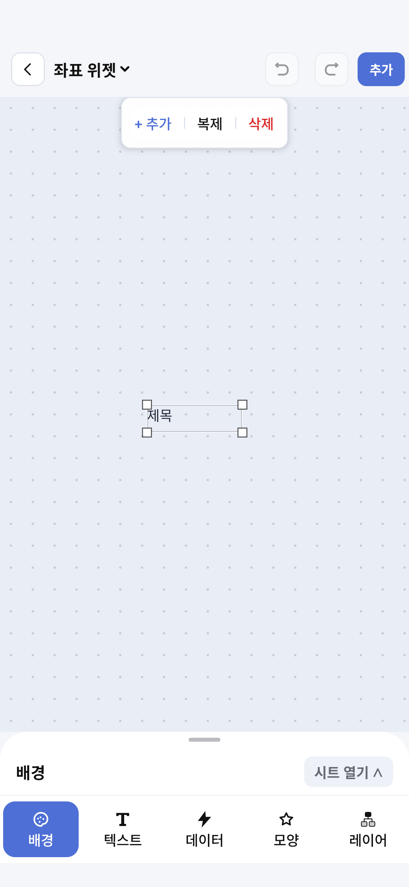
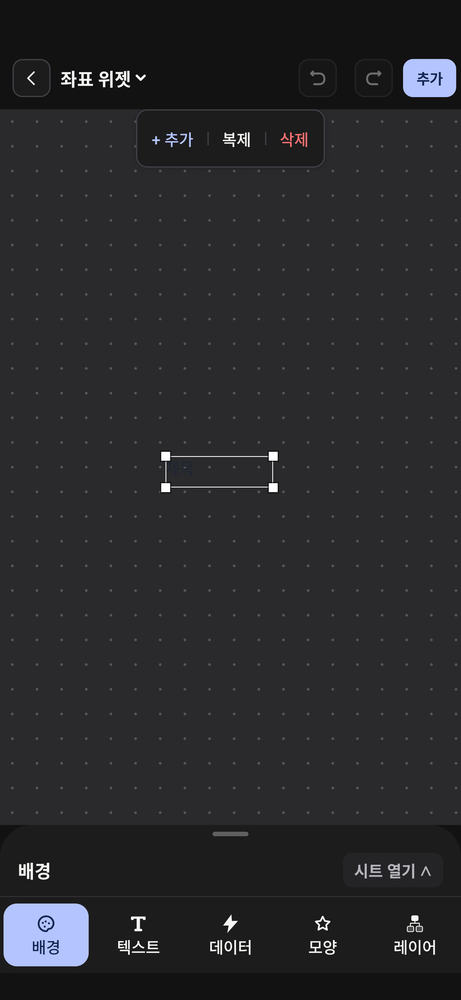

편집 작업 영역과 상단바
편집기
- 화면 ID
editor-workspace- 모듈
- MyWidget :app
- 진입 경로
- 홈·보관함·템플릿·생성 또는 위젯 설정 → editor
- 구현 방식
- Jetpack Compose
- 주요 상태
- 로딩
- 오류·재시도
- 빈 문서
- 정상
- 처리 중
- 실행 취소·다시 실행
- 추가·적용·업데이트·저장
- 액션 테스트
- 테마
- 라이트
- 다크
- 반복 UI
- 한 줄 상단바
- 문서 메뉴
- 도구 독
- 두 단계 인스펙터
- 평가
- 앱 조작과 authored canvas를 분리합니다. 타이틀은 말줄임하고 주요 액션의 48dp 영역을 보존합니다.
- 적용 상태
- 기존 구조 사용
- 코드 조사
- 코드 조사 완료
- 화면 확인
- 실제 앱 경로 확인
- 실행 근거
- API 35 QaSmokeJourneyTest에서 홈과 보관함을 거쳐 실제 문서를 편집기에 열고 뒤로 돌아왔습니다. 보관함의 필터와 홈의 긴 제목은 한·영 라이트·다크, 320~390dp, 글꼴 1~2배의 별도 렌더 테스트를 통과했습니다.
구현 위치
EditorScreenContent·MyWidget/app/src/main/java/com/mywidget/editor/feature/editor/EditorResponsiveLayout.kt:17EditorStudioWorkspace·MyWidget/app/src/main/java/com/mywidget/editor/feature/editor/EditorStudioWorkspace.kt:126EditorPreviewTitleBar·MyWidget/app/src/main/java/com/mywidget/editor/feature/editor/EditorPreviewTitleBar.kt:32
사용 컴포넌트
Android 네이티브 예시
아래 캡처에 표시된 상태와 기기 조건을 확인했습니다.

411 × 891 dp · 560 dpi · 글꼴 1배 · API 35 · ko-KR
캡처 기준 HEAD
28c96a452 · 소스 지문 2926a62326fe · 2026-11-13T13:54:53.964821Z
411 × 891 dp · 560 dpi · 글꼴 1배 · API 35 · ko-KR
캡처 기준 HEAD
28c96a452 · 소스 지문 2926a62326fe · 2026-11-13T13:54:53.964821Z